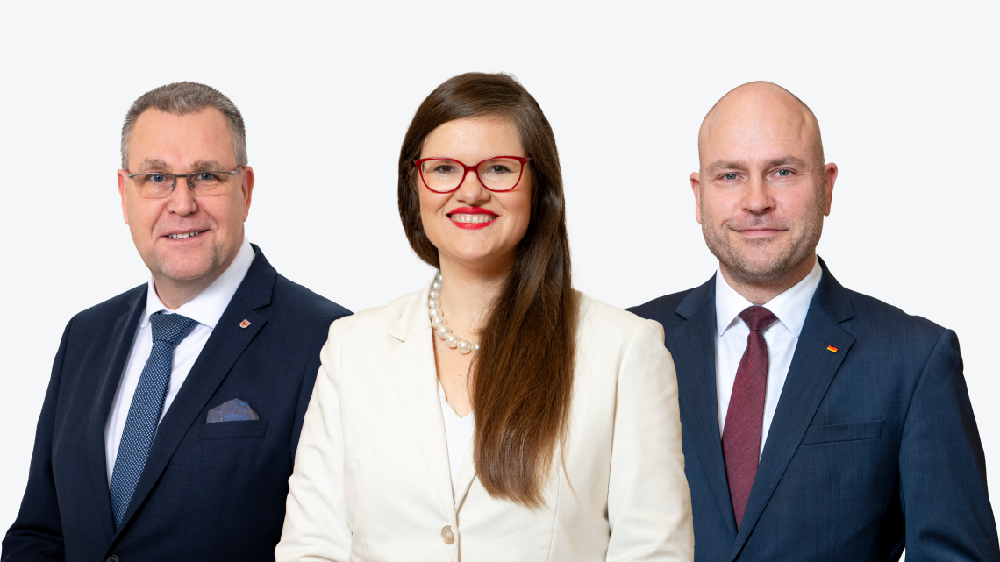
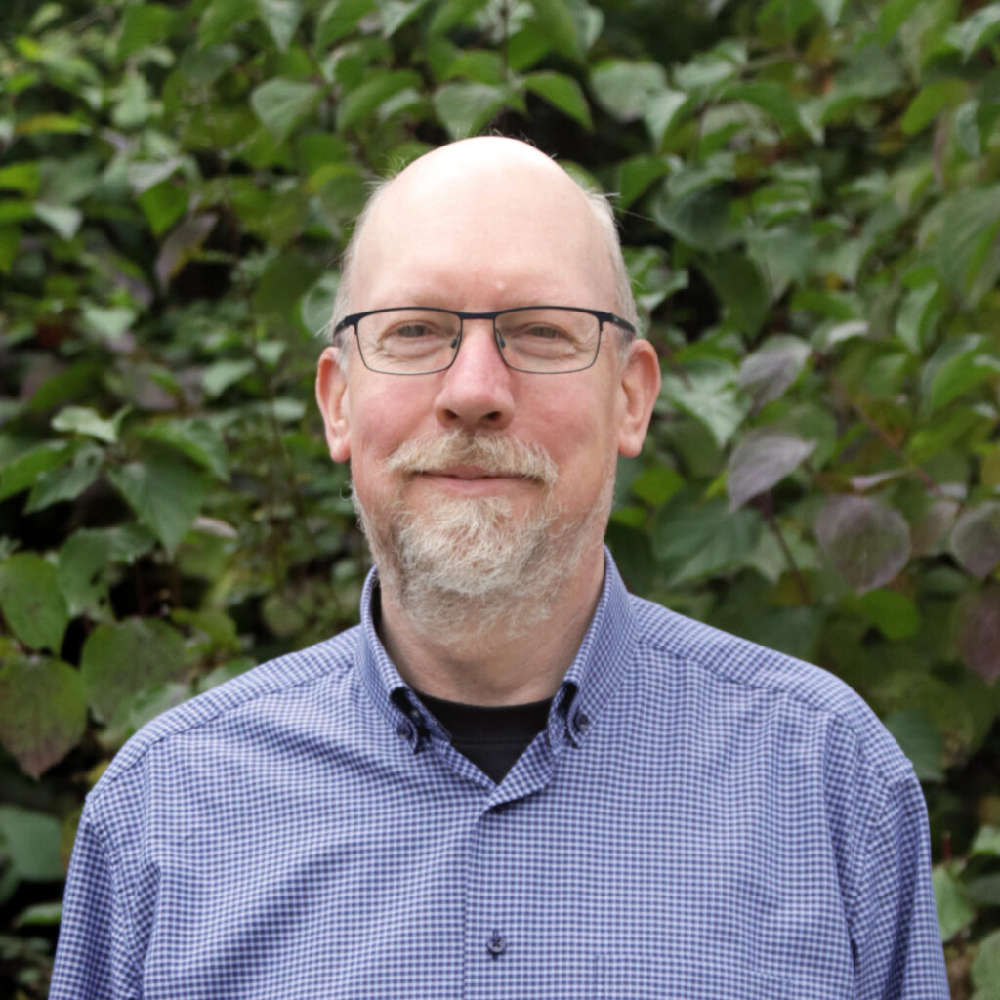
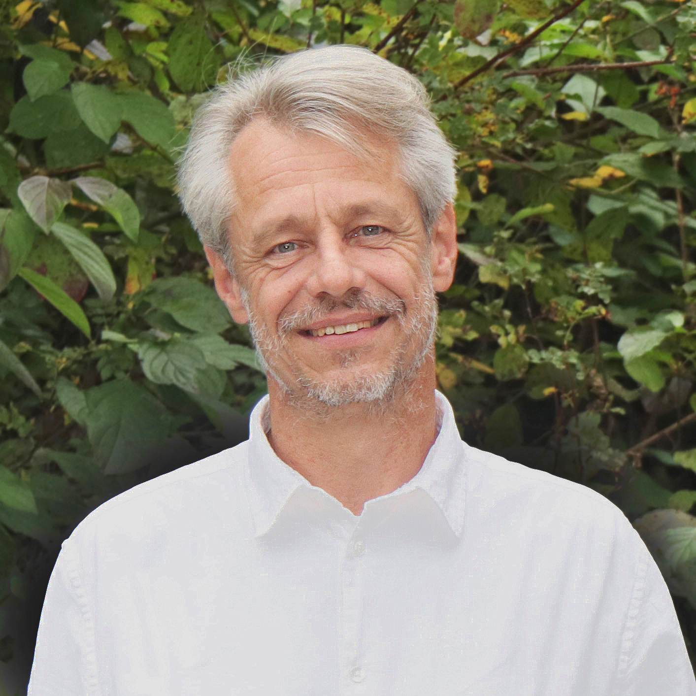
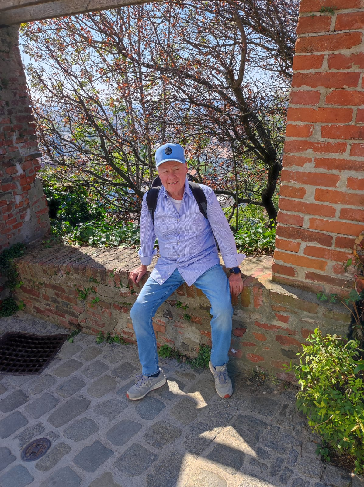

Personen
Sechs Kernprofile des Vereins
Die folgenden Texte stellen sechs Verantwortliche ausführlich vor und zeigen zusätzlich Geburtsdaten sowie die angegebenen Familienbezüge im Verein.
Vorschau persönlicher Angaben
Geburtsdaten und Familieninformationen
Diese Angaben sind bewusst sichtbar aufgenommen, weil sie für die Veröffentlichung ausdrücklich freigegeben wurden.
Schwiegervater von Karin Hoffmann
Mutter von Janine Hoffmann und Stefanie Hoffmann; Schwiegertochter von Bernd Kripp
Tochter von Karin Hoffmann; Schwester von Janine Hoffmann
Tochter von Karin Hoffmann; Mutter von Luca Hoffmann
Sohn von Janine Hoffmann; Enkel von Karin Hoffmann
Familienbezüge
- Bernd Kripp ist der Schwiegervater von Karin Hoffmann.
- Karin Hoffmann ist die Mutter von Janine Hoffmann und Stefanie Hoffmann.
- Janine Hoffmann ist die Mutter von Luca Hoffmann.

Lokales Einsatzteam
Rainer Rösler, Stefanie Hoffmann und Phillip Brüderle
- Rainer Rösler Baudurchführung, langjähriger Bauherr Geboren am 06.04.1968
- Stefanie Hoffmann Pädagogik & Schulen, studierte Sozialpädagogin Geboren am 24.07.1990 Tochter von Karin Hoffmann; Schwester von Janine Hoffmann
- Phillip Brüderle Logistik, langjährige Erfahrung Warenwirtschaft Geboren am 22.02.1975
Expertenteam einzeln erklärt
Drei Rollen, ein Einsatzauftrag
Das Originalbild bleibt erhalten; die folgenden Ausschnitte fokussieren jeweils eine Person aus dem Teamfoto.
Baudurchführung, langjähriger Bauherr
Rainer Rösler
Geboren am 06.04.1968
Rainer Rösler übernimmt im lokalen Einsatzteam die Baudurchführung. Seine Stärke liegt darin, aus Planungen konkrete Abläufe zu machen: Baustellen müssen vorbereitet, Materialien eingeschätzt, Arbeitsschritte sortiert und Risiken früh erkannt werden. Gerade bei Projekten wie Schulen, Sanitäranlagen oder Brunnen ist diese praktische Bauperspektive unverzichtbar, weil ein gutes Ziel nur dann hilft, wenn es vor Ort stabil und nutzbar umgesetzt wird.
Durch seine langjährige Erfahrung als Bauherr bringt er einen Blick für Machbarkeit, Reihenfolge und Qualität ein. Er kann einschätzen, welche Lösungen robust genug sind, wo einfache Konstruktionen sinnvoller sind als komplizierte Technik und wie Bauabschnitte so gedacht werden, dass sie mit lokalen Möglichkeiten zusammenpassen. Für Africa-Aid-Bayreuth e.V. steht er damit für handwerkliche Bodenhaftung und die Fähigkeit, Verantwortung direkt am Projekt zu übernehmen.
Pädagogik & Schulen, studierte Sozialpädagogin
Stefanie Hoffmann
Geboren am 24.07.1990
Tochter von Karin Hoffmann; Schwester von Janine Hoffmann
Stefanie Hoffmann bringt die pädagogische Perspektive in das Einsatzteam ein. Wenn der Verein Schulen baut oder Lernorte verbessert, geht es nicht nur um Wände, Dächer und Räume. Entscheidend ist, dass Kinder, Lehrkräfte und Gemeinden diese Orte sinnvoll nutzen können. Als studierte Sozialpädagogin achtet Stefanie Hoffmann darauf, dass Bildungsprojekte nicht als reine Bauaufgabe verstanden werden, sondern als Beitrag zu Alltag, Schutz, Entwicklung und Teilhabe.
Ihre Aufgabe ist besonders wichtig, weil Infrastruktur im Bildungsbereich immer mit Menschen verbunden ist. Ein Schulraum soll Konzentration ermöglichen, Sicherheit geben und Vertrauen schaffen. Stefanie Hoffmann kann dabei helfen, Bedürfnisse von Kindern und Familien mitzudenken und den Blick auf soziale Wirkung zu richten. Sie steht im Team für die Frage, wie ein Projekt pädagogisch Sinn ergibt und wie aus einem Gebäude ein verlässlicher Lernort werden kann.
Logistik, langjährige Erfahrung Warenwirtschaft
Phillip Brüderle
Geboren am 22.02.1975
Phillip Brüderle verantwortet im Einsatzteam die logistische Perspektive. Bei Projekten in mehreren afrikanischen Ländern entscheidet Logistik oft darüber, ob eine gute Planung tatsächlich umsetzbar wird. Material muss beschafft, transportiert, gelagert und in der richtigen Reihenfolge verfügbar sein. Seine langjährige Erfahrung in der Warenwirtschaft hilft dabei, diese Abläufe realistisch zu denken und Engpässe frühzeitig sichtbar zu machen.
Für Africa-Aid-Bayreuth e.V. ist diese Kompetenz besonders wertvoll, weil Schulen, Brunnen und Sanitäranlagen nicht nur finanzielle Mittel benötigen, sondern eine funktionierende Versorgungskette. Phillip Brüderle steht für Übersicht, Organisation und praktische Verlässlichkeit. Er hilft, die Brücke zwischen Bedarf, Material, Transport und Umsetzung zu schlagen, damit Projekte nicht an vermeidbaren organisatorischen Problemen scheitern.

Geboren am 15.09.1969 3.545 Zeichen ProfiltextGeschäftsführer
Jörg Brill
Jörg Brill, geboren am 15.09.1969, steht als Geschäftsführer für den organisatorischen Mittelpunkt von Africa-Aid-Bayreuth e.V. Seine Aufgabe ist es, viele einzelne Linien zusammenzuführen: Gespräche mit Unterstützern, Abstimmungen innerhalb des Vereins, die Vorbereitung von Projekten, die Begleitung von Entscheidungen und die verständliche Darstellung dessen, was der Verein leisten möchte. Eine solche Rolle verlangt Ruhe, Verlässlichkeit und die Bereitschaft, auch dann den Überblick zu behalten, wenn ein Projekt aus vielen kleinen Arbeitsschritten besteht. Gerade bei Hilfsprojekten, die Schulen, Brunnen, öffentliche Sanitäranlagen und weitere Infrastruktur betreffen, entscheidet nicht nur die gute Idee, sondern die Fähigkeit, Verantwortung sauber zu ordnen.
Als Geschäftsführer achtet er darauf, dass aus Hilfsbereitschaft konkrete Vorhaben werden. Dazu gehört, Ziele so zu formulieren, dass sie für Spender, Ehrenamtliche und Projektpartner nachvollziehbar sind. Er verbindet die strategische Perspektive mit praktischen Fragen: Welche Maßnahme ist zuerst nötig, welche Ressourcen werden gebraucht, wer übernimmt welche Aufgabe, und wie lässt sich später erklären, was mit den Mitteln erreicht wurde. Für den Verein ist diese Übersetzungsleistung wichtig, weil Menschen nur dann dauerhaft Vertrauen fassen, wenn sie spüren, dass Engagement nicht im Ungefähren bleibt.
In seiner Funktion ist Jörg Brill auch Ansprechpartner für Themen, die nach außen wirken. Er repräsentiert den Verein, hält Kontakt zu Förderern und unterstützt dabei, das Anliegen von Africa-Aid-Bayreuth e.V. klar zu vermitteln. Dabei geht es nicht um große Worte, sondern um eine Sprache, die die Dringlichkeit in strukturschwachen Regionen Afrikas sichtbar macht und zugleich respektvoll bleibt. Schulen, Wasserstellen und Sanitäranlagen sind keine abstrakten Projekte, sondern Grundlagen für Alltag, Gesundheit und Bildung. Diese Verbindung von sachlicher Beschreibung und menschlichem Blick prägt seine Arbeit.
Innerhalb des Teams sorgt er dafür, dass unterschiedliche Kompetenzen ineinandergreifen. Bau, Pädagogik, Logistik, Recht, Datenschutz, Controlling, Technik und Spendenarbeit haben jeweils eigene Anforderungen. Die Geschäftsführung muss diese Bereiche nicht ersetzen, aber sie muss sie verstehen, koordinieren und in eine gemeinsame Richtung führen. Jörg Brill übernimmt dabei die Rolle des verbindenden Gesprächspartners, der Entscheidungen vorbereitet, offene Punkte sichtbar macht und dafür sorgt, dass die Beteiligten nicht nebeneinander, sondern miteinander arbeiten.
Für die Spendenkommunikation ist seine Aufgabe besonders sensibel. Wer spendet, gibt Vertrauen ab. Dieses Vertrauen verdient eine klare Antwort: Was soll entstehen, warum ist es notwendig, wie wird es begleitet, und welche Verantwortung trägt der Verein? Jörg Brill steht dafür, diese Fragen ernst zu nehmen. Er unterstützt eine Kultur, in der Spenden nicht nur dankbar angenommen, sondern nachvollziehbar eingesetzt werden. Damit trägt er dazu bei, dass Hilfe dauerhaft tragfähig bleibt und nicht nur als einmaliger Impuls verstanden wird.
Seine Person steht damit für Führung im praktischen Sinn: zuhören, ordnen, entscheiden, erklären und andere befähigen, ihren Teil beizutragen. Bei Africa-Aid-Bayreuth e.V. bedeutet Geschäftsführung nicht Distanz zur Arbeit vor Ort, sondern eine verlässliche Struktur hinter der Arbeit vor Ort. Genau diese Struktur hilft dem Verein, langfristig Projekte in Kongo, Angola, Mosambik, Malawi und Uganda vorzubereiten und zu begleiten.

Geboren am 28.04.1963 3.118 Zeichen ProfiltextRechtsabteilung und Datenschutz
Thilo Romer
Thilo Romer, geboren am 28.04.1963, verantwortet im Verein die rechtliche Begleitung und den Datenschutz. Damit hält er einen Bereich zusammen, der häufig erst dann sichtbar wird, wenn er fehlt. Gute Vereinsarbeit braucht klare Regeln, verlässliche Dokumentation und einen sorgsamen Umgang mit Informationen. Gerade ein Verein, der Spenden sammelt, mit persönlichen Daten arbeitet, Kontakte zu Unterstützern pflegt und Projekte in mehreren Ländern beschreibt, muss darauf achten, dass Vertrauen auch rechtlich abgesichert ist. Thilo Romer steht für diese Form von Verlässlichkeit.
Seine Aufgabe beginnt nicht erst bei Verträgen oder formalen Prüfungen. Sie beginnt bereits dort, wo Entscheidungen vorbereitet werden. Wenn Africa-Aid-Bayreuth e.V. über eine Maßnahme, eine Kooperation oder eine öffentliche Darstellung nachdenkt, ist die rechtliche Perspektive ein Schutz für alle Beteiligten. Sie hilft, Zusagen klar zu formulieren, Verantwortlichkeiten sauber zuzuordnen und Risiken frühzeitig zu erkennen. Das macht Projekte nicht schwerfälliger, sondern stabiler, weil spätere Missverständnisse vermieden werden.
Als Datenschutzbeauftragter achtet Thilo Romer darauf, dass persönliche Informationen respektvoll behandelt werden. Dazu gehören Daten von Spenderinnen und Spendern, Kontaktdaten, organisatorische Informationen und Inhalte, die im Vereinsalltag entstehen. Datenschutz ist für ihn nicht nur eine Pflicht, sondern eine Haltung. Wer Menschen um Unterstützung bittet, muss zeigen, dass er mit ihren Informationen ebenso sorgfältig umgeht wie mit den anvertrauten Spenden. Diese Sorgfalt stärkt die Glaubwürdigkeit des Vereins.
Im Zusammenspiel mit der Geschäftsführung und dem Controlling trägt seine Arbeit dazu bei, dass der Verein handlungsfähig bleibt und trotzdem nachvollziehbar arbeitet. Projekte in strukturschwachen Regionen Afrikas sind oft mit praktischen Fragen verbunden, die schnell und pragmatisch gelöst werden müssen. Gleichzeitig braucht es Regeln, damit Pragmatismus nicht zu Unklarheit wird. Thilo Romer unterstützt diese Balance: Er denkt die Anforderungen mit, ohne den Blick auf das eigentliche Ziel zu verlieren.
Für die Öffentlichkeit ist seine Rolle ebenfalls wichtig. Eine Homepage, ein Flyer oder ein Spendenaufruf wirken nach außen und prägen das Vertrauen in den Verein. Rechtliche Genauigkeit, transparente Aussagen und ein sensibler Umgang mit personenbezogenen Informationen helfen, die Arbeit seriös darzustellen. Thilo Romer trägt dazu bei, dass die Kommunikation nicht nur ansprechend, sondern auch verantwortbar ist. Das ist besonders bedeutsam, wenn persönliche Lebensläufe, Bilder und Aufgabenbereiche sichtbar werden.
Seine Person steht deshalb für die ruhige Sicherheit im Hintergrund. Er macht möglich, dass der Verein mutig handeln kann, weil wichtige Grundlagen geklärt sind. Bei Africa-Aid-Bayreuth e.V. bedeutet Recht und Datenschutz nicht Bürokratie um der Bürokratie willen, sondern Schutz der Menschen, Schutz der Organisation und Schutz des gemeinsamen Auftrags. Diese Arbeit ist ein wesentlicher Teil davon, dass Hilfe langfristig Vertrauen verdient.

Geboren am 03.04.1943 Schwiegervater von Karin Hoffmann 3.218 Zeichen ProfiltextEhrenvorsitzender und Hauptspender
Bernd Kripp
Bernd Kripp, geboren am 03.04.1943, ist Ehrenvorsitzender und Hauptspender des Vereins. In der Familienstruktur des Vereins ist er der Schwiegervater von Karin Hoffmann. Er hat den Aufbau von Africa-Aid-Bayreuth e.V. maßgeblich finanziert und damit eine Grundlage geschaffen, auf der andere mitarbeiten, spenden und Verantwortung übernehmen können. Seine Rolle ist deshalb mehr als eine formale Würdigung. Sie steht für den Anfangsimpuls, ohne den viele Vorhaben nicht starten würden: Jemand entscheidet sich, nicht nur Zustimmung zu geben, sondern tatsächlich Mittel, Vertrauen und persönliche Unterstützung einzubringen.
Als Ehrenvorsitzender verkörpert Bernd Kripp die Verbindung von Erfahrung und Förderung. Ein Verein braucht Menschen, die nach vorne denken, aber auch Menschen, die Stabilität geben und daran erinnern, warum die Arbeit begonnen wurde. Sein Beitrag liegt darin, dass er die Idee des Vereins ernst nimmt und sie mit einer Bereitschaft zum Handeln verbindet. Er unterstützt nicht nur einzelne Maßnahmen, sondern den Aufbau einer Struktur, die länger trägt als ein einzelnes Projekt.
Für Africa-Aid-Bayreuth e.V. ist diese Form des Engagements von besonderer Bedeutung. Infrastrukturelle Hilfe in Ländern wie Kongo, Angola, Mosambik, Malawi und Uganda entsteht nicht von heute auf morgen. Bevor ein Brunnen gebaut, eine Schule vorbereitet oder eine Sanitäranlage geplant wird, müssen Kontakte, Verwaltung, Kommunikation, Materialfragen und Verantwortlichkeiten geklärt werden. Der Aufbau eines Vereins ist also selbst ein Teil der Hilfe, weil er die Voraussetzung schafft, dass spätere Hilfe verlässlich organisiert werden kann.
Bernd Kripp steht für einen Spendenbegriff, der nicht bei der Überweisung endet. Spenden bedeutet in seinem Verständnis, eine Entwicklung möglich zu machen. Es geht um die Frage, welche Wirkung eine Unterstützung entfalten kann, wenn sie gut begleitet wird. Wer den Aufbau finanziert, ermöglicht nicht nur Sichtbares, sondern auch das Unsichtbare: Abstimmungen, Planung, rechtliche Grundlagen, technische Vorbereitung und Öffentlichkeitsarbeit. Genau diese unsichtbaren Schritte entscheiden oft darüber, ob sichtbare Ergebnisse später Bestand haben.
Seine Rolle wirkt auch nach innen. Menschen engagieren sich leichter, wenn sie spüren, dass jemand an die Sache glaubt und bereit ist, Verantwortung mitzutragen. Bernd Kripp gibt dem Verein Rückhalt. Dieser Rückhalt kann motivieren, weil er zeigt, dass das Projekt nicht nur eine lose Idee ist, sondern ein ernst gemeinter Auftrag. Besonders in einer Aufbauphase ist das wichtig: Vertrauen entsteht durch Menschen, die zuerst investieren, bevor andere sicher sein können, dass sich ihr Einsatz lohnt.
Als Ehrenvorsitzender bleibt Bernd Kripp damit eine prägende Figur für die Identität des Vereins. Er steht für Großzügigkeit, Anschubkraft und die Bereitschaft, Hilfe nicht theoretisch zu lassen. Seine Unterstützung macht deutlich, dass nachhaltige Entwicklung konkrete Menschen braucht, die den ersten Schritt gehen. Bei Africa-Aid-Bayreuth e.V. ist dieser erste Schritt verbunden mit dem Ziel, Bildung, Wasser, Hygiene und Infrastruktur dort zu stärken, wo sie für den Alltag besonders dringend gebraucht werden.
 Geboren am 22.09.1981
3.079 Zeichen Profiltext
Geboren am 22.09.1981
3.079 Zeichen Profiltext
Controlling
Frank Weiß
Frank Weiß, geboren am 22.09.1981, verantwortet das Controlling des Vereins. Seine Arbeit sorgt dafür, dass Zahlen, Planungen und Entscheidungen zusammenpassen. In einem spendenfinanzierten Umfeld ist diese Aufgabe zentral, weil jede Unterstützung nachvollziehbar eingesetzt werden soll. Controlling bedeutet dabei nicht Misstrauen, sondern Orientierung. Es hilft dem Verein zu sehen, welche Mittel vorhanden sind, welche Verpflichtungen entstehen, welche Kosten realistisch sind und welche Wirkung mit den verfügbaren Ressourcen erreicht werden kann.
Bei Projekten in strukturschwachen Regionen Afrikas können kleine Planungsfehler große Folgen haben. Materialkosten, Transport, lokale Beschaffung, Bauabläufe, Verwaltung und Reserven müssen bedacht werden. Frank Weiß achtet darauf, dass Vorhaben nicht nur gut klingen, sondern auch finanziell belastbar geplant sind. Damit schützt er den Verein vor Überforderung und die Projektpartner vor enttäuschten Erwartungen. Eine gute Idee wird erst dann zu einem verantwortbaren Projekt, wenn sie auch rechnerisch nachvollziehbar ist.
Seine Rolle verbindet Genauigkeit mit Wirkung. Zahlen sind im Verein kein Selbstzweck. Sie sollen helfen, Schulen, Brunnen, öffentliche Sanitäranlagen und weitere Infrastruktur so vorzubereiten, dass Spenden dort ankommen, wo sie gebraucht werden. Frank Weiß arbeitet deshalb an einer Grundlage, auf der Entscheidungen sachlich getroffen werden können. Welche Maßnahme ist finanzierbar? Welche Folgekosten entstehen? Wo braucht es Prioritäten? Wo kann eine Spende am schnellsten Wirkung entfalten, ohne die langfristige Qualität zu vernachlässigen?
Für Spenderinnen und Spender ist Controlling ein wesentlicher Teil des Vertrauens. Menschen möchten wissen, dass ihre Unterstützung sorgfältig behandelt wird. Frank Weiß trägt dazu bei, dass der Verein Auskünfte geben, Entwicklungen dokumentieren und Mittelverwendung erklären kann. Transparenz entsteht nicht erst in einem fertigen Bericht, sondern durch saubere Erfassung von Anfang an. Diese Haltung stärkt die Glaubwürdigkeit von Africa-Aid-Bayreuth e.V. und schafft eine Grundlage für wiederkehrende Unterstützung.
Im Team arbeitet er eng mit Geschäftsführung, Spendenverantwortung und Logistik zusammen. Wenn ein Projekt geplant wird, müssen Zahlen frühzeitig mit praktischen Abläufen verbunden werden. Ein Bauvorhaben braucht andere Kostenstrukturen als eine pädagogische Ausstattung, ein Brunnen andere Risiken als eine Sanitäranlage. Frank Weiß hilft, diese Unterschiede sichtbar zu machen. Dadurch können Entscheidungen differenziert getroffen werden, statt alle Vorhaben über einen Kamm zu scheren.
Seine Person steht für die nüchterne Seite der Hilfe, die gerade deshalb so wertvoll ist. Wer helfen will, braucht Herz. Wer langfristig helfen will, braucht zusätzlich Übersicht, Kontrolle und nachvollziehbare Planung. Frank Weiß bringt diese Perspektive in den Verein ein. Bei Africa-Aid-Bayreuth e.V. bedeutet Controlling, dass Großzügigkeit eine verlässliche Richtung bekommt und aus Spenden tragfähige Ergebnisse entstehen können.
 Geboren am 08.05.1978
2.936 Zeichen Profiltext
Geboren am 08.05.1978
2.936 Zeichen Profiltext
Systemadministration, Webspace und KI
Harald Oppel
Harald Oppel, geboren am 08.05.1978, verantwortet Systemadministration, Webspace-Verwaltung und KI-Themen. Damit betreut er die digitale Grundlage, auf der der Verein sichtbar, erreichbar und organisatorisch arbeitsfähig bleibt. Moderne Vereinsarbeit ist nicht mehr nur ein Schreibtisch, ein Telefon und ein Ordner. Eine Organisation, die Spenden sammelt, Menschen informiert, Bilder und Berichte veröffentlicht und intern koordiniert, braucht digitale Strukturen, die funktionieren. Harald Oppel hält diese Strukturen im Blick.
Seine Aufgabe beginnt bei der technischen Zuverlässigkeit. Eine Homepage muss erreichbar sein, Inhalte müssen gepflegt werden können, Bilder sollen korrekt laden, Kontaktwege müssen klar sein und sensible Daten brauchen Schutz. Gerade für einen jungen oder wachsenden Verein ist die digitale Präsenz ein wichtiger Vertrauenspunkt. Wer online nach Africa-Aid-Bayreuth e.V. sucht, soll schnell verstehen, wofür der Verein steht, wer Verantwortung trägt und wie eine Spende geleistet werden kann.
Als Verantwortlicher für Webspace und Systeme denkt Harald Oppel auch an die langfristige Pflege. Eine Seite ist nicht nur dann wichtig, wenn sie neu gestaltet wird. Sie muss aktualisiert, abgesichert und weiterentwickelt werden. Neue Projekte, veränderte Bankinformationen, Berichte aus Einsatzländern oder neue Bildmaterialien müssen technisch sauber integriert werden. Diese laufende Aufmerksamkeit verhindert, dass die Außendarstellung veraltet oder unübersichtlich wirkt.
Der Bereich KI ergänzt diese Arbeit um eine zukunftsorientierte Perspektive. Künstliche Intelligenz kann helfen, Texte vorzubereiten, Informationen zu strukturieren, Bilder zu organisieren, Übersetzungen anzustoßen oder interne Abläufe zu vereinfachen. Entscheidend ist jedoch, solche Werkzeuge verantwortungsvoll zu nutzen. Harald Oppel steht für einen Umgang, der Chancen erkennt, aber nicht die menschliche Verantwortung ersetzt. Gerade in einem gemeinnützigen Umfeld müssen Genauigkeit, Datenschutz und Würde der dargestellten Menschen Vorrang haben.
Im Zusammenspiel mit den anderen Verantwortlichen schafft seine Arbeit Entlastung. Wenn technische Wege funktionieren, können sich Pädagogik, Bau, Logistik, Spendenarbeit und Controlling auf ihre eigentlichen Aufgaben konzentrieren. Eine sichere und klare digitale Infrastruktur macht es leichter, Informationen zu teilen, Unterstützer zu erreichen und Projekte sichtbar zu machen. Damit ist Technik nicht Nebensache, sondern ein Werkzeug für Wirkung.
Harald Oppel steht im Verein für die Verbindung von praktischer Administration und digitaler Weiterentwicklung. Seine Rolle sorgt dafür, dass Africa-Aid-Bayreuth e.V. nicht nur vor Ort etwas bewegen möchte, sondern auch in der Kommunikation professionell auftritt. Für eine Organisation, die Vertrauen gewinnen und Menschen zum Mithelfen einladen will, ist diese technische Grundlage ein wesentlicher Bestandteil der Arbeit.
 Geboren am 13.05.1966
Mutter von Janine Hoffmann und Stefanie Hoffmann; Schwiegertochter von Bernd Kripp
3.063 Zeichen Profiltext
Geboren am 13.05.1966
Mutter von Janine Hoffmann und Stefanie Hoffmann; Schwiegertochter von Bernd Kripp
3.063 Zeichen Profiltext
Spenden und Steuerberatung
Karin Hoffmann
Karin Hoffmann, geboren am 13.05.1966, verbindet im Verein die Spendenarbeit mit steuerlicher Fachlichkeit. Sie ist die Mutter von Janine Hoffmann und Stefanie Hoffmann; Bernd Kripp ist ihr Schwiegervater. Diese Kombination aus fachlicher Aufgabe und familiärer Verbindung macht sichtbar, dass der Verein von persönlichem Rückhalt und professioneller Verantwortung zugleich getragen wird. Wer für Schulen, Brunnen, Sanitäranlagen und Infrastruktur spendet, möchte nicht nur berührt werden, sondern auch sicher sein, dass die Spende ordnungsgemäß behandelt wird. Karin Hoffmann trägt dazu bei, dass diese Sicherheit entstehen kann.
Als Spendenbeauftragte denkt sie an die Menschen, die den Verein ermöglichen. Spenderinnen und Spender brauchen klare Informationen, eine verständliche Bankverbindung, einen eindeutigen Verwendungszweck und das Gefühl, dass ihre Unterstützung willkommen ist. Spendenarbeit ist daher mehr als das Bitten um Geld. Sie ist Beziehungspflege, Dankbarkeit, Transparenz und die Fähigkeit, Wirkung konkret zu erklären. Karin Hoffmann unterstützt eine Ansprache, die respektvoll ist und die Dringlichkeit der Projekte nicht überzeichnet.
Ihre steuerliche Perspektive gibt der Arbeit zusätzliche Stabilität. Gemeinnützigkeit, Nachweise, Dokumentation und korrekte Abläufe sind für einen Verein unverzichtbar. Gerade wenn Spenden wachsen, darf die Verwaltung nicht hinterherlaufen. Karin Hoffmann achtet darauf, dass die formalen Grundlagen mit dem Anspruch des Vereins zusammenpassen. Das schützt die Organisation und gibt Unterstützern die Gewissheit, dass ihre Hilfe nicht nur gut gemeint, sondern auch sauber verarbeitet wird.
Inhaltlich verbindet sie die Spendenarbeit mit den Zielen des Vereins. Jede Bitte um Unterstützung soll zeigen, wofür die Mittel gebraucht werden: für Lernräume, Wasserzugang, öffentliche Hygiene und Infrastruktur, die Gemeinden stärkt. Dabei ist es wichtig, nicht abstrakt zu bleiben. Ein Brunnen kann Wege verkürzen und Gesundheit schützen. Eine Schule kann Alltag, Perspektive und Gemeinschaft fördern. Eine Sanitäranlage kann Würde, Sicherheit und Prävention stärken. Solche Zusammenhänge machen Spenden greifbar.
Im Team arbeitet Karin Hoffmann eng mit Geschäftsführung und Controlling zusammen. Spenden müssen geplant, erfasst und verständlich zugeordnet werden. Wenn ein Projekt Mittel benötigt, hilft ihre Arbeit dabei, die passende Kommunikation und die korrekte Verwaltung zusammenzubringen. Diese Schnittstelle ist entscheidend: Die beste Spendenkampagne verliert an Wert, wenn sie nicht sauber dokumentiert wird, und die sauberste Verwaltung bleibt wirkungslos, wenn niemand zum Unterstützen eingeladen wird.
Karin Hoffmann steht damit für Vertrauen an einer besonders sensiblen Stelle. Sie hilft, aus Hilfsbereitschaft konkrete finanzielle Handlungskraft zu machen. Bei Africa-Aid-Bayreuth e.V. bedeutet Spendenarbeit, Menschen einzuladen, Teil eines langfristigen Aufbaus zu werden. Ihre Rolle sorgt dafür, dass diese Einladung glaubwürdig, ordentlich und nah an den Zielen des Vereins bleibt.
Weitere Engagierte
Menschen, die den Verein ergänzen

Janine Hoffmann
Rekrutierung
Geboren am 25.06.1987
Tochter von Karin Hoffmann; Mutter von Luca Hoffmann

Luca Hoffmann
Ehrenamtlich engagiert
Geboren am 01.01.2008
Sohn von Janine Hoffmann; Enkel von Karin Hoffmann